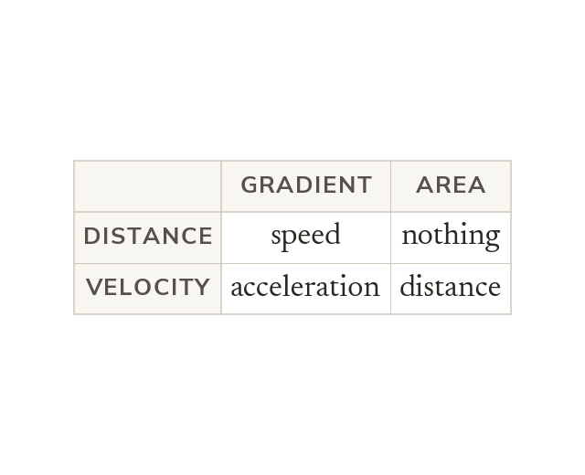
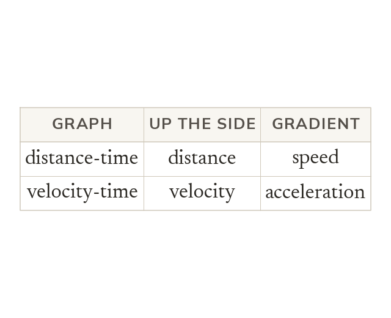
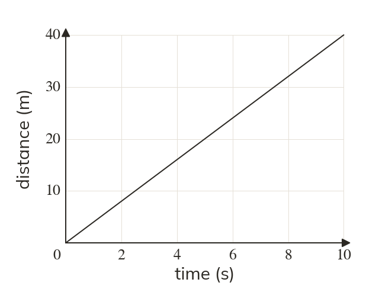
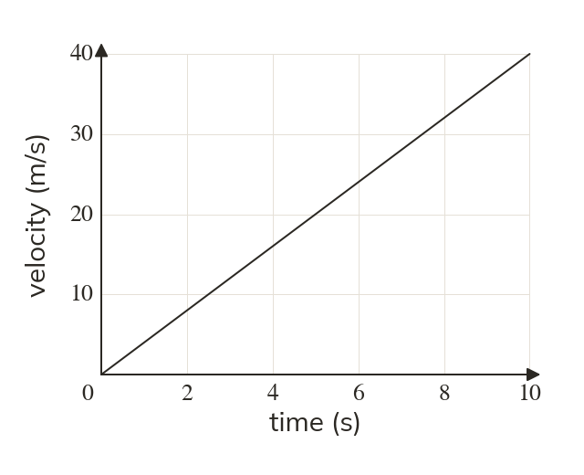
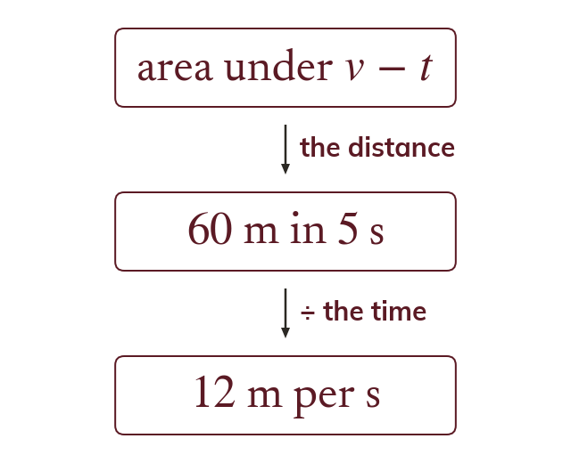
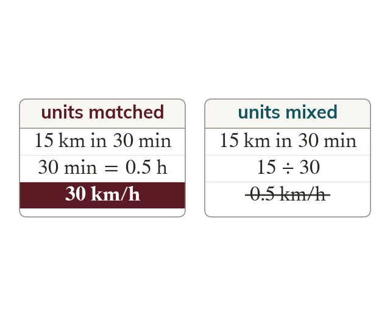
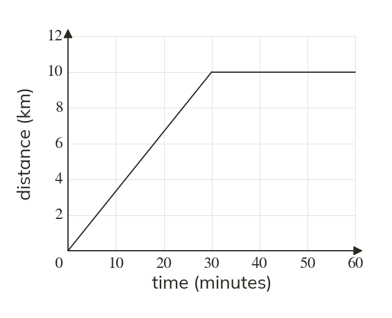
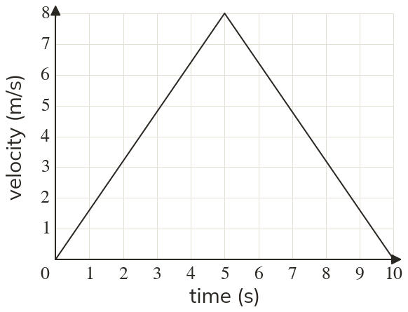

The axes decide
A gradient is always the y quantity per unit of the x quantity. An area is always the y quantity multiplied by the x quantity.
Two graphs that look alike can mean different things. Today every problem starts by reading the axes, because they decide what a gradient and an area mean.
Work down the page at your own pace. Write every answer in your book first, then click to check it.
Read each card, then follow the worked examples one step at a time.

A gradient is always the y quantity per unit of the x quantity. An area is always the y quantity multiplied by the x quantity.

So a gradient is a speed on one graph and an acceleration on another. Read the axis labels and their units before anything else.


Pick an answer. If it's wrong, the feedback tells you which mistake it was.
Read each card, then follow the worked examples one step at a time.

A multi-step problem may use both graphs. Find the quantity each graph gives, then combine them.

Time in minutes and distance in km do not give km/h. Convert before the last step.


Pick an answer. If it's wrong, the feedback tells you which mistake it was.

Finished? Next lesson: 9.12.1 Cancelling Algebraic Fractions.
Log in, then search for a code to practise that skill.
Videos, worksheets and more on each part of this lesson.